Appendix F — Chapter 3 figures, deposited and recompiled
Which deposited Chapter 3 figures can be redrawn from the compiled data, and how do they compare? Each section below puts the figure as deposited in 2023 (left, with its caption) beside the recompiled or replacement figure (right); figure numbers are those of Chapter 3. Data figures (Figs. 3, 5-9, 15) are redrawn from the same measurements in the SIMS dataset (Supplement Table S2), the EMPA table and the melt-inclusion table, with flagged analyses left out. Model figures (Figs. 11-13 and 15) are shown three ways: as deposited, as a replica in the deposited layout drawn with the 2026 models, and in their 2026 form; Fig. 14 as deposited and as a replica; Fig. 16 paired with its 2026 replacement. Fig. 8 adds the 2026 degassing paths to the recompiled points. Not recompiled: Fig. 1 (cartoon of the ascent stages; the 2026 stages are in Chapter 3), Fig. 2 (photograph of the GCB1 section), Fig. 4 (FTIR; future work), and Fig. 10 (post-eruptive cooling model; see Chapter 7).
F.1 Figure 3: olivine cores and rims, and the olivine profiles
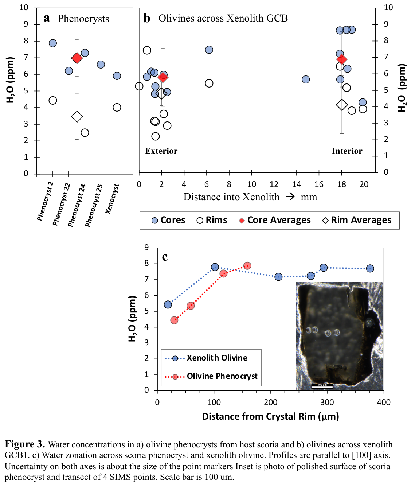
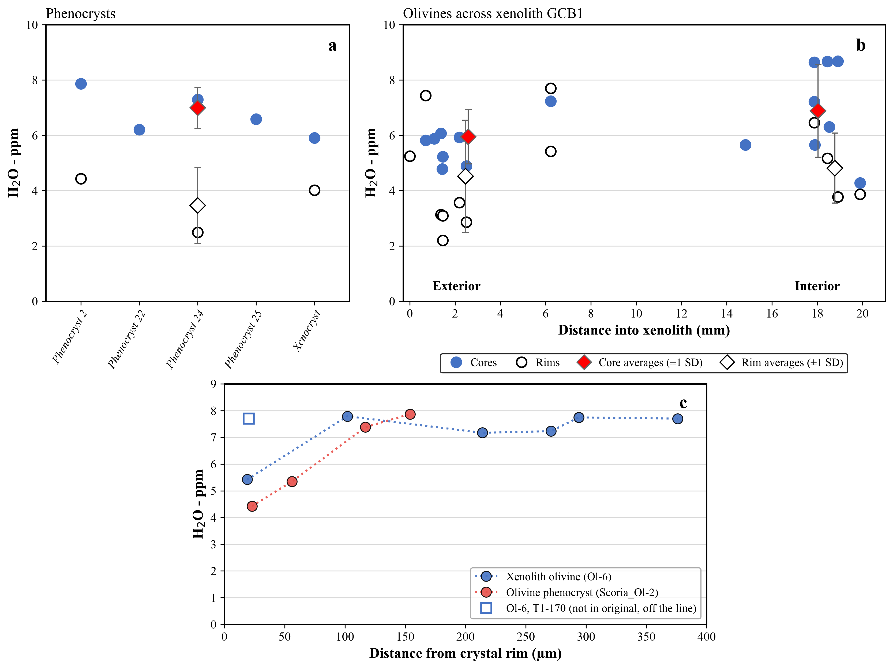
Figure 3 (Chapter 3). Left (a): as deposited (2023). Right (b): recompiled from the SIMS dataset.
Every plotted point is reproduced. The phenocryst core and rim means (6.99 and 3.46 ppm) match the deposited diamonds. Three differences: the deposited exterior means of panel b are not those of the data (rims differ by 0.3-0.6 ppm); one Ol-6 rim (T1-170, 7.70 ppm at 20 µm) is missing from the deposited panels b and c; and the error bars here are one standard deviation, which the deposited caption does not define.
F.2 Figure 5: pyroxene water against Mg number
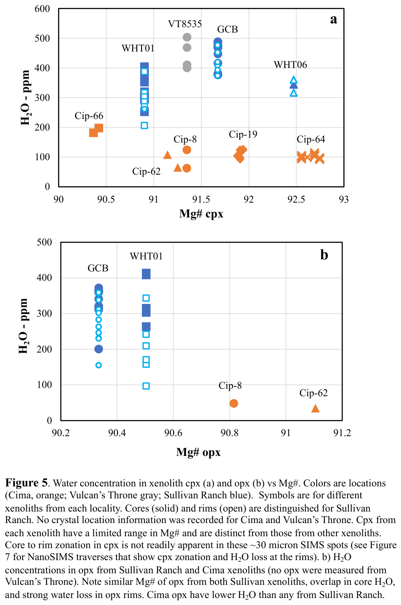
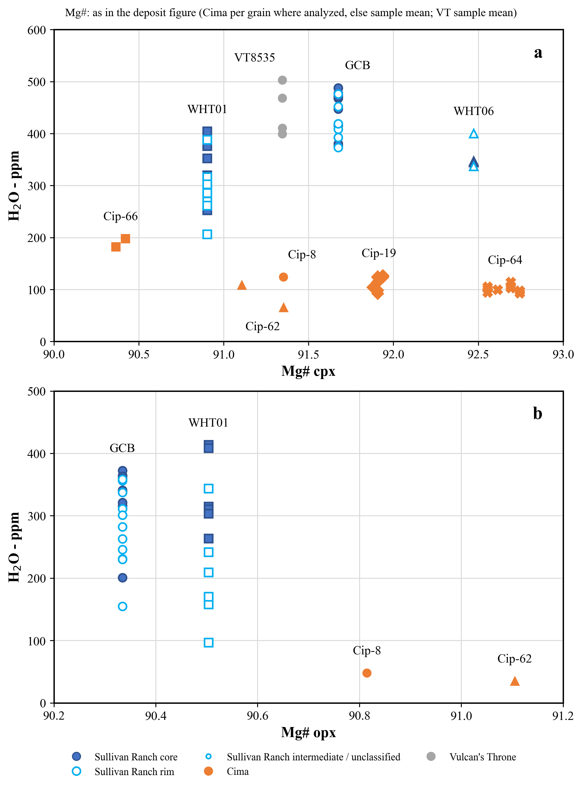
Figure 5 (Chapter 3). Left (a): as deposited (2023). Right (b): recompiled from the SIMS dataset and the EMPA table.
All opx points and all but one cpx point are identical, using the Mg# convention of the deposited charts. The remaining differences are the excluded duplicate analysis (T1-002), the choice of WHT06 rims, and one Cima sample (cip98-62) plotted with an earlier EMPA value.
F.3 Figure 6: pyroxene water across the xenoliths
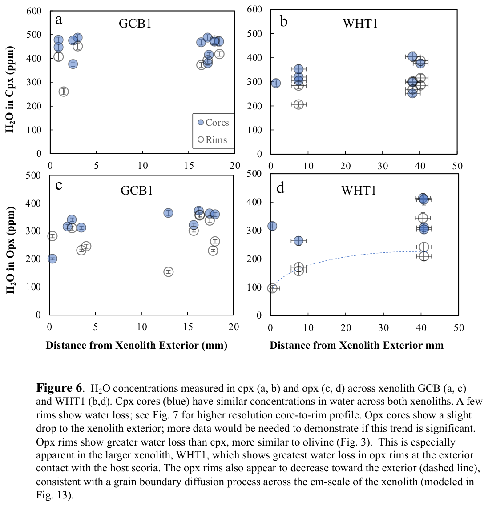
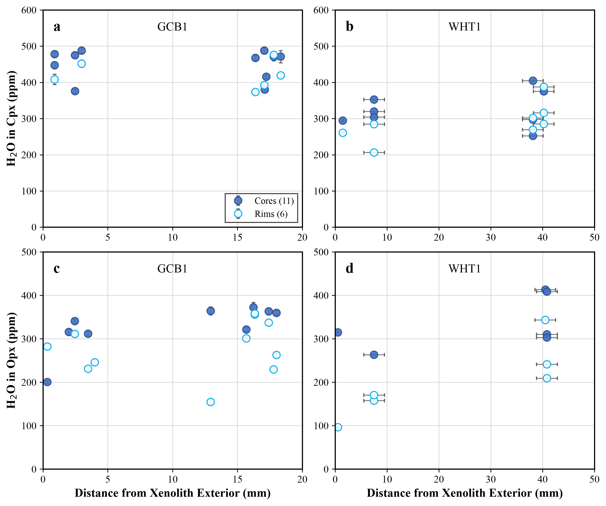
Figure 6 (Chapter 3). Left (a): as deposited (2023). Right (b): recompiled from the SIMS dataset.
The cores and rims of GCB1 and WHT1 are the same analyses. The hand-drawn trend of the deposited panel d is not redrawn, because it has no data basis.
F.4 Figure 7: pyroxene profiles
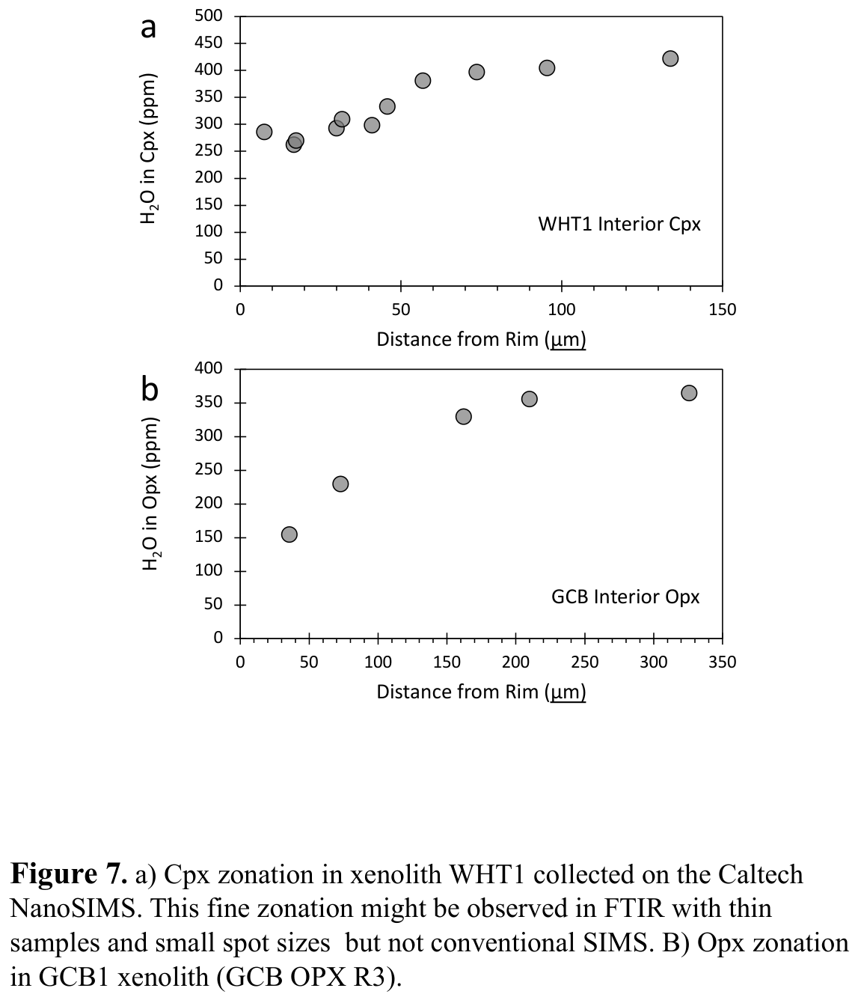
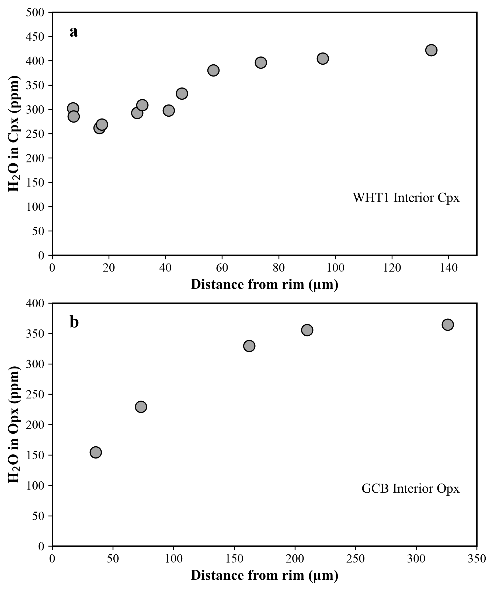
Figure 7 (Chapter 3). Left (a): as deposited (2023). Right (b): recompiled from the SIMS dataset.
The deposited file holds two versions of this figure; the final one is shown. The opx profile (b) matches point for point. The cpx profile (a) has 12 analyses; the deposited panel shows 11 (the 7.3 µm replicate, T1-076, is not on it).
F.5 Figure 8: melt-inclusion H2O, CO2 and saturation pressure
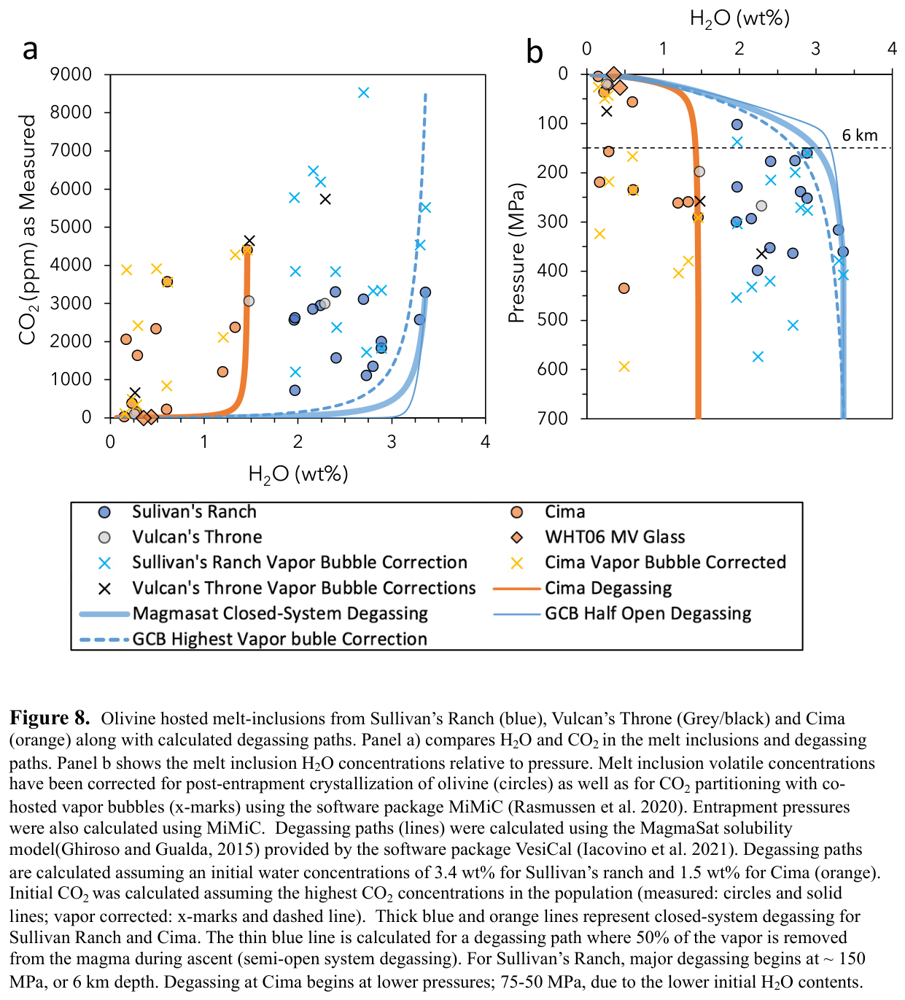
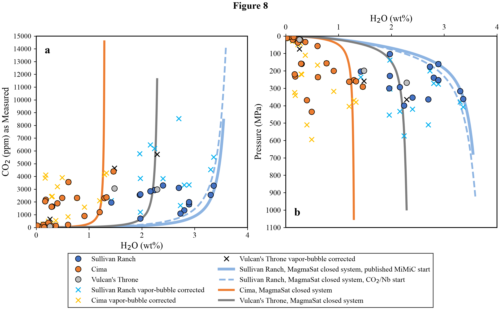
Figure 8 (Chapter 3). Left (a): as deposited (2023). Right (b): recompiled from the 2023 melt-inclusion table, with the 2026 degassing paths (MagmaSat, closed system): Sullivan Ranch from the published MiMiC start (solid) and from the CO2/Nb start (dashed), Cima and Vulcan’s Throne.
All 39 inclusion rows are plotted. The 2026 paths start deeper (682-1,057 MPa, 8,500-14,700 ppm CO2) than the deposited axes, so the axes run to 15,000 ppm and 1,100 MPa. Not reproduced: the WHT06 melt-vein glass, the half-open and largest-bubble-correction paths and the 150 MPa (6 km) line, which are not in the compiled data. The 2026 version of this comparison, with the production MiMiC values, is Figure 6.2.
F.6 Figure 9: melt-inclusion H2O and S against Cl and SiO2
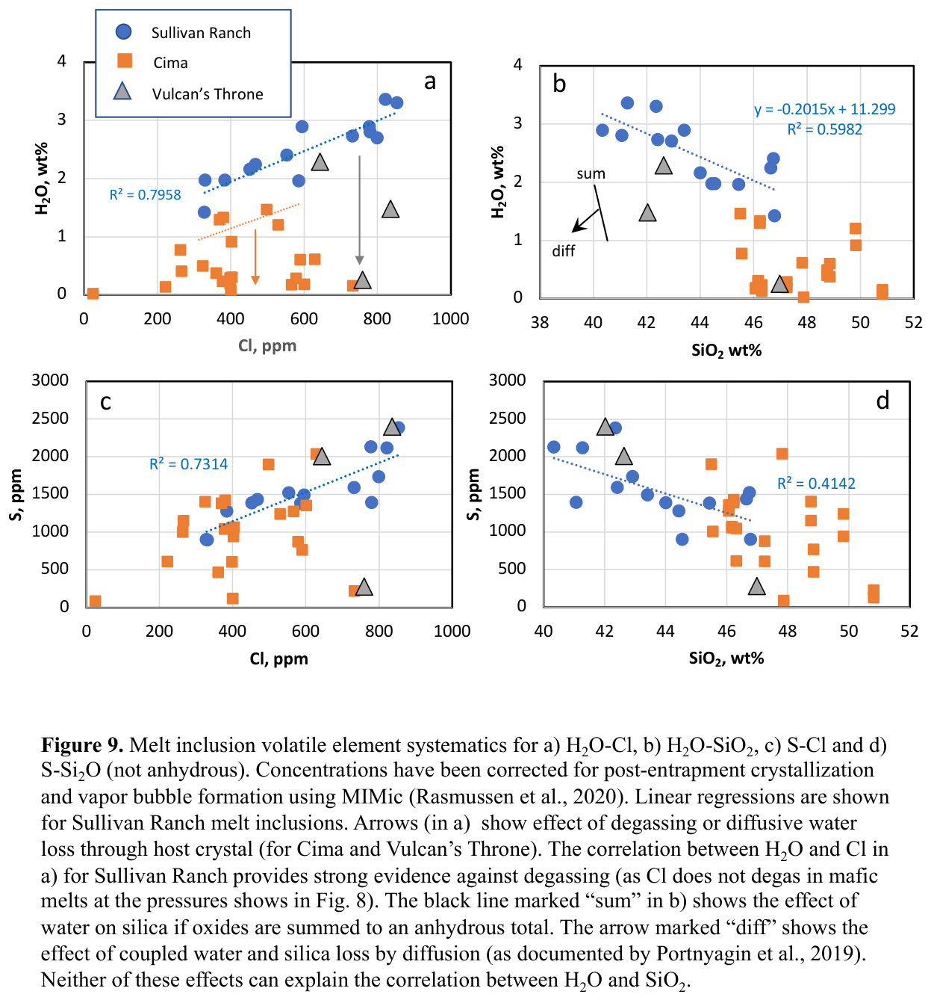
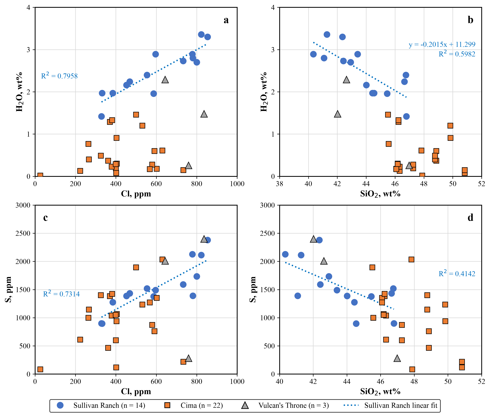
Figure 9 (Chapter 3). Left (a): as deposited (2023). Right (b): recompiled from the 2023 melt-inclusion table.
The four printed Sullivan Ranch fits are reproduced exactly from the 14 inclusions (H2O-Cl R² 0.796, H2O-SiO2 R² 0.598, S-Cl R² 0.731, S-SiO2 R² 0.414). The Cima fit line and the hand-drawn arrows are not redrawn.
F.7 Figure 11: decompression-rate fits
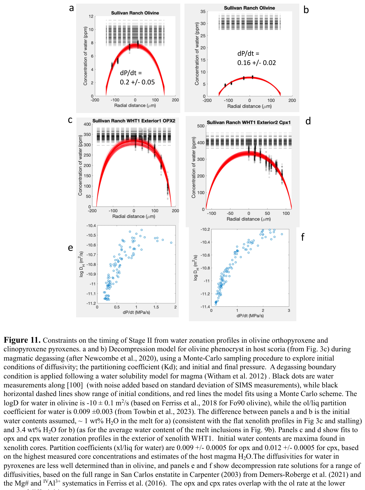

Figure 11 (Chapter 3). Left (a): as deposited (2023). Right (b): replica with the 2026 models, published MiMiC start: (a) Ol-2 with the joint fit on the P-T path (0.100 MPa/s at 82.8 °C/GPa; 46 and 120 °C/GPa dashed); (b) Ol-2 isothermal at 1200 °C (0.158 MPa/s); (c, d) WHT1 exterior opx and cpx with the same joint history; (e, f) the pyroxene diffusivity each rate needs (68 % envelope), with the joint fit as a star. Semi-transparent curves are 60 draws with the P-T slope uniform in 46-120 °C/GPa (rate and pyroxene diffusivity following the joint fits at that slope) and the partition coefficient within its prior (15 %); the band at the top is the starting concentration over the same draws (16-84 %).
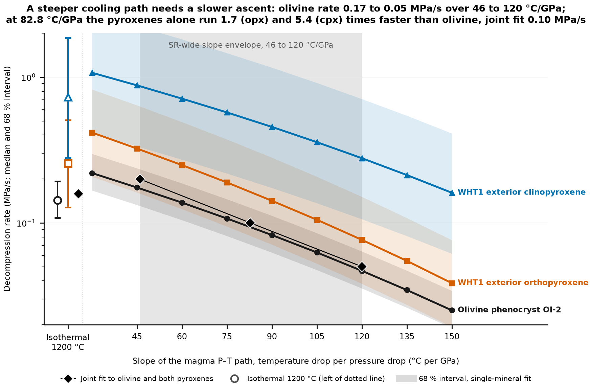
Figure 11, 2026 form. Single-mineral rates against the slope of the magma P-T path, with the joint fit.
The deposited panels a and b compared two olivine core assumptions; the 2026 work varies the temperature treatment instead, so a and b show the P-T path and the isothermal fit. The model curves reproduce the joint-fit χ² of every mineral (olivine 13.3, opx 0.93, cpx 6.35). Panels e and f are curves with a 68 % envelope, because the fitted rate scales exactly with the assumed diffusivity. The 2023 fits were isothermal on the 2023 degassing path and diffusivity brackets; the rates are in Chapter 8.
F.8 Figure 12: decompression rate against diffusivity
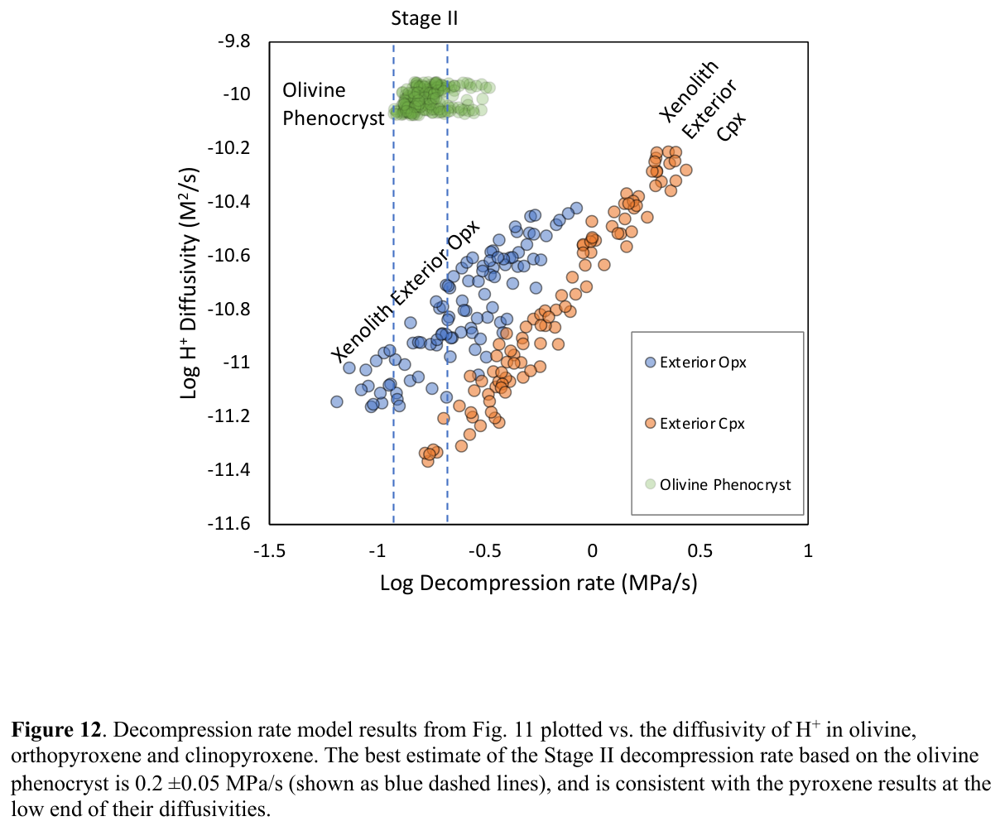
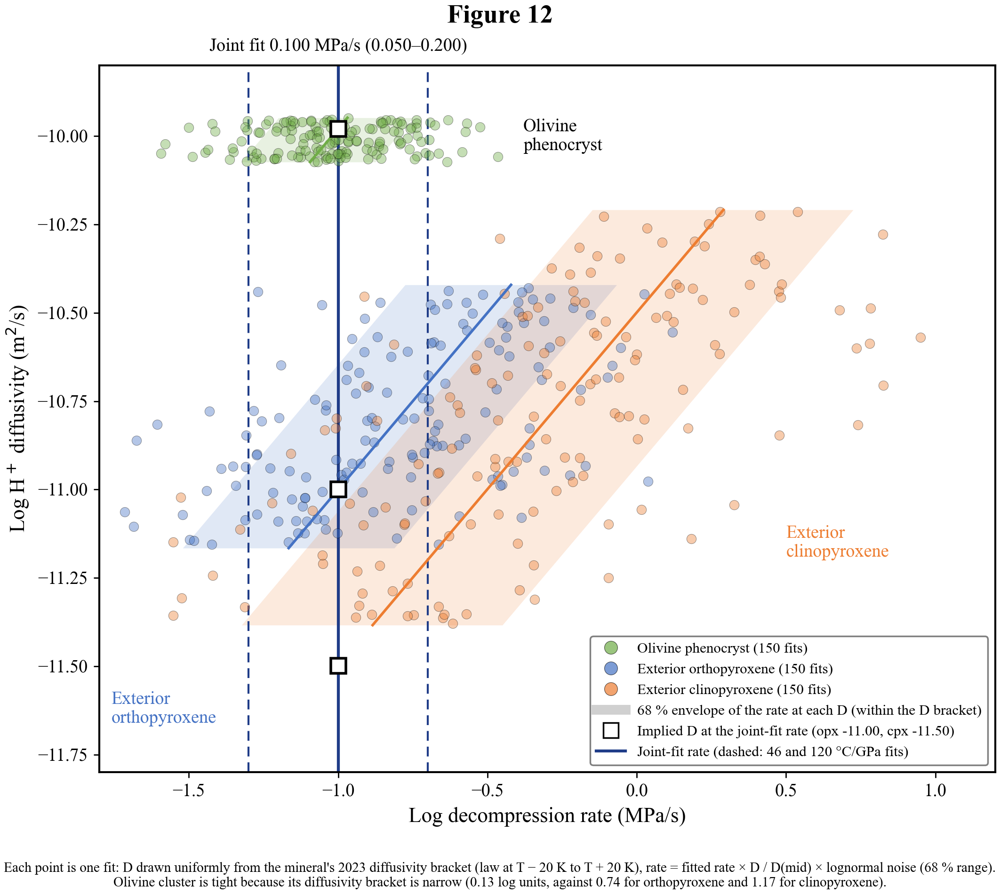
Figure 12 (Chapter 3). Left (a): as deposited (2023). Right (b): replica with the 2026 single-mineral fits (published MiMiC start, P-T path): log diffusivity against log decompression rate for olivine, opx and cpx. Each cloud is 150 draws, as in the deposited figure: the diffusivity uniform within the mineral’s diffusivity bracket (the laws at T − 20 K and T + 20 K) and the rate scaled from that mineral’s fit with its 68 % spread; shaded bands are the 68 % envelopes. The joint-fit rate (0.100 MPa/s) and the pyroxene diffusivities it implies (opx −11.00, cpx −11.50) are marked.

Figure 12, 2026 form. The pyroxene diffusivities one ascent history needs, against published laws. Every published law on it was checked against its source (docs/literature/VERIFY_FIG12_FIG16_2026-10-30.md): all 24 recompute to the plotted 1200 °C value within 0.002 log units. 21 were read in full text. The three Hercule & Ingrin (1999) laws were checked against the abstract only (the paper is not in the Zotero library), and the log D0 of −3.4 for their [001]/[100] law is not confirmed. The D0 exponents of Carpenter (2003) are illegible in the thesis scan; the laws match that thesis’s plotted data to about 0.3 log units. Every law is extrapolated 100–350 °C beyond its experiments to reach 1200 °C.
The olivine cloud is tight because its diffusivity bracket is narrow (0.13 log units, against 0.74 for opx and 1.17 for cpx), in 2023 as now. In 2023 each mineral gave its own rate for an assumed diffusivity. In 2026 the joint fit asks which diffusivities let one ascent history fit olivine, opx and cpx together (Chapter 8).
F.9 Figure 13: grain-boundary transport across WHT1
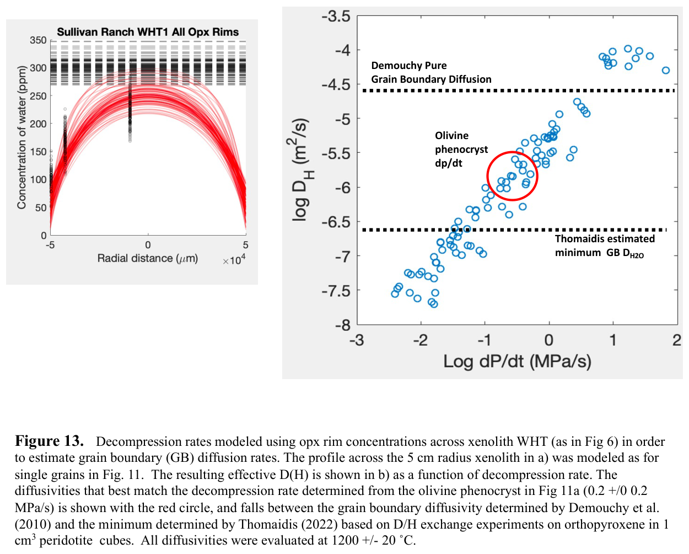

Figure 13 (Chapter 3). Left (a): as deposited (2023). Right (b): replica with the 2026 network fitted to each opx grain’s extrapolated rim (published MiMiC start, P–T path 82.8 °C/GPa, 0.100 MPa/s; edge follows the melt): (a) the extrapolated rims (squares, ±1σ), the measured outermost points (circles, 19–45 µm inside the grains) and the network at the end of ascent for the best fit and its 68 % range, scaled to the median opx core (312 ppm); diamonds are each grain’s prediction, its own core times the network’s remaining fraction; (b) the network diffusivity against rate for the two standard fits: the extrapolated rims (log D 10^−6.25, 68 %: −6.35 to −6.15, χ² 5.6 for 4 rims) and option B (all 35 points, one common start, an opx diffusivity per grain: −5.75, −5.81 to −5.68, χ² 44), with the fit to the measured outermost points (−6.45, χ² 26) for comparison, Demouchy et al. (2010) grain-boundary values on a right axis giving the equivalent grain-boundary D from their eq. 5 as the thesis used it (boundary width 10 µm, grain size 500 µm: +1.22 log units), and the Thomaidis (2022) minimum; (c) each grain’s profile with its one-step fit and extrapolated rim.

Figure 13, 2026 form. Transport mechanisms into the xenolith.
The 2023 test treated the measured outermost points as grain-boundary values; it cannot fit both the 0.5 mm and the 40.8 mm grains (χ² 26 for 4 grains). The replica instead extrapolates each grain’s own profile to its edge (scripts/decompression/gb_rim_extrapolated.py: a one-step profile Cb + (C0 − Cb) erf(x/L) with the core C0 held at the grain’s median, ±20 ppm per point), then fits the network to those edges: log D 10^−6.25 (−6.35 to −6.15), χ² 5.6 for 4 rims. Each grain’s prediction is its core (0.5 mm grain 315 ppm, 7.5 mm 264, 40.5 mm 413, 40.8 mm 310) times the network’s remaining fraction. The second standard fit, option B (scripts/decompression/gb_aniso_halfwidth.py), models diffusion inside every grain behind the network with one common start (388 ppm, 384–400) and one opx partition coefficient, and gives each grain its own opx diffusivity for anisotropy: 10^−5.75 (−5.81 to −5.68), χ² 43.8 for 35 points (Chapter 8). Per-grain opx log D: 0.5 mm −11.1, 7.5 mm −11.0, 40.5 mm −11.8, 40.8 mm −10.4. The earlier nested fit, each grain starting at its own measured core with one shared opx D, gave 10^−5.6 (χ² 63.3). A one-step profile treats the falling edge as constant, which biases the extrapolated value low, so the two standard fits bracket the network diffusivity.
The cpx and a fit with every grain (scripts/decompression/gb_all_grains.py, Table F.1). The same extrapolation works poorly for the WHT1 cpx. The 1.45 mm and 40.2 mm grains show a drop at their outermost point only, so their edges are unconstrained. The 7.5 mm and 38.1 mm traverses scatter (one-step χ² 30 for 14 points and 68 for 11), and the 38.1 mm grain’s points labeled Core (298 ppm) sit below its deeper points (about 400). Where it can be read, the cpx rim drops less than the opx rim at the same depth: at 7.5 mm by 27 % against 50 %. Fitted alone, the cpx rims want a network more than ten times slower (−7.35). A full nested fit with all eight grains puts the cpx diffusivity at 10^−13.1, below every published cpx law at 1200 °C (the slowest is −12.77, Ferriss et al. 2016) and 1.6 log units below the joint fit’s −11.5; two scattered cpx traverses supply 148 of its χ² of 227. The cpx therefore do not add a usable constraint on the network, and Figure 13 uses the opx only.
| Fit (MiMiC start, P–T path, 0.100 MPa/s) | log D network (68 %) | log D opx / cpx | χ² (points) |
|---|---|---|---|
| Extrapolated rims, opx (Figure 13) | −6.25 (−6.35 to −6.15) | n/a | 5.6 (4 rims) |
| Extrapolated rims, cpx | −7.35 (−7.60 to −7.10) | n/a | 0.03 (4 rims, 2 unconstrained) |
| Extrapolated rims, opx + cpx | −6.50 (−6.75 to −6.40) | n/a | 18.5 (8 rims) |
| Nested, opx only | −5.65 (−5.90 to −5.50) | −11.6 / n/a | 63.1 (35) |
| Nested, cpx only | −6.45 (−6.80 to −6.20) | n/a / −12.7 | 154.8 (41) |
| Nested, all grains | −5.85 (−6.00 to −5.65) | −11.5 / −13.1 | 226.6 (76) |
The cpx under option B, alone and with the opx (scripts/decompression/gb_cpx_option_b.py, Table F.2, Figure F.1). Each phase gets one common start (its own absolute partition coefficient) and each grain its own diffusivity; the cpx boundary sees a fraction β of the network’s drop. With β = 1 the cpx fit poorly (χ² 178 for 41 points in the joint fit). With β free the joint opx + cpx fit picks β = 0.5 and a network of 10^−5.6 (χ² 141 for 76 points: cpx 93, opx 48, the opx 3.7 above their own best). Its common starts, 412 ppm for opx and 388 ppm for cpx, match the intact interior cores (411 and 390 ppm) without being told to. The exterior cpx (1.45 and 7.5 mm) and the exterior opx all need log D ≈ −11.0. The interior grains split as the opx do: the 40.2 mm cpx needs −12.6 and the 38.1 mm cpx −11.3. Fitted alone, the cpx cannot separate β from the network diffusivity (β 0.5 with the network at the top of the grid). Most of the remaining cpx misfit is in the scattered 7.5 and 38.1 mm traverses (χ² 33 and 40).
| Fit (option B, MiMiC start, P–T path, 0.100 MPa/s) | β | log D network | Common start, opx / cpx (ppm) | χ² (points) |
|---|---|---|---|---|
| cpx alone | 1 | −6.4 | — / 342 | 162.5 (41) |
| cpx alone | 0.5 | −5.0 (grid limit) | — / 408 | 84.4 (41) |
| opx + cpx | 1 | −5.8 | 388 / 342 | 221.6 (76) |
| opx + cpx | 0.5 | −5.6 | 412 / 388 | 141.0 (76) |
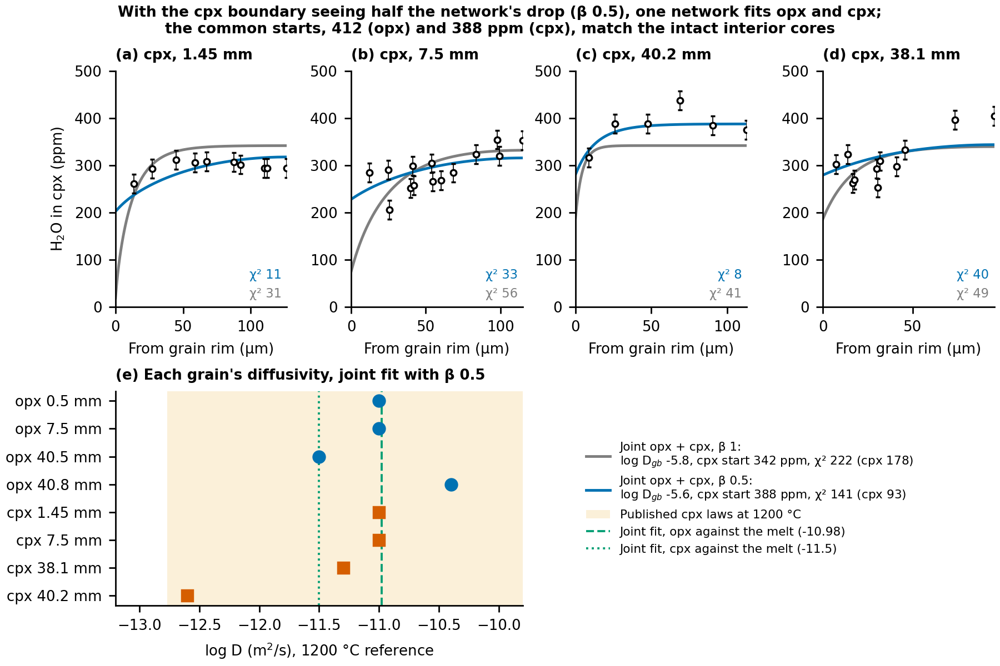
Not yet tested (Henry, 2026-10-31): a path-length factor on each grain’s distance to the exterior, which could make the 40.5 mm grain effectively deeper (it lost less than its depth predicts) but cannot explain the 40.8 mm grain (it lost more; docs/OPEN_QUESTIONS.md Q33).
The 0.5 mm grain’s outermost point is modeled too high (152 against 96 ppm at 21 µm), and the edge value is not the cause. At the end of ascent the network edge has already fallen to about 5 ppm opx-equivalent (98 % of the melt’s drop). Holding the edge at a floor of 50–100 ppm is allowed by the data (χ² 63.6–66.0 against 63.3; 68 % range of the floor 0–75 ppm) but raises the modeled point to 153–168 ppm. Giving that grain its own opx D does not fix it either (best 10^-11.5, modeled point 142 ppm). Its measured profile (96, 207, 273, 308, 321 ppm from 21 to 140 µm) drops more steeply at the rim than one diffusivity from a 315 ppm start allows. The joint fit’s opx D (10^-11.0) is not comparable, because it starts the grain at the 411 ppm interior cores. Holding the edge at a final pressure or a buffering fraction also converges to the unbuffered edge (best Pf = 0, 68 % 0–10 MPa; best f = 1.0, 0.97–1.0).
Why the 2026 fit does not reproduce the deposited panel a. The thesis model (data/recovered/M14_ModelCode/.../WHT1 All opx Grain Bound/master_script_test.m) differs in three choices. Table F.3 reruns it with one choice changed at a time (scripts/decompression/thesis_gb_repro.py).
- It treats the five rims (96, 158, 170, 209, 242 ppm) as the grain-boundary concentration itself, with no diffusion inside the grains. The 2026 nested fit puts each measured point 21–45 µm inside a grain that diffuses slowly.
- Its edge follows the melt only down to a final pressure Pf drawn from 0–20 MPa, and the run stops there, so the edge ends at K × H(Pf): up to about 90 ppm at 20 MPa. The 2026 edge follows the melt to the surface (about 5 ppm).
- It leaves out the 40.5 mm grain’s rim (343 ppm), which sits 100–130 ppm above the other two interior rims at the same depth; no one-dimensional slab can fit both.
The degassing path (VesiCal at 1200 °C in the thesis, MiMiC start now) changes nothing.
| Rims fitted | Edge stops at | Edge value (ppm) | Best log D_gb at 0.1 MPa/s | χ² | Modeled rims: 0.5, 7.5, 40.8 mm (ppm) |
|---|---|---|---|---|---|
| Thesis five | 20 MPa (thesis prior’s top) | 91 | −6.2 | 4.6 | 95, 145, 241 |
| Thesis five | 30 MPa | 114 | −6.0 | 3.5 | 117, 151, 224 |
| Thesis five | surface (2026) | 0 | −6.5 | 33.4 | 13, 127, 265 |
| Six (with 343) | 20 MPa | 91 | −6.4 | 24.9 | 97, 158, 262 |
| Six (with 343) | surface | 0 | −6.8 | 43.7 | 19, 158, 287 |
So the 96 ppm exterior rim fits only if the xenolith edge stopped exchanging with the melt at about 20–30 MPa, which leaves the edge at 90–115 ppm; the deposited curves end at 60–100 ppm. The nested fit reads the same rim differently: the edge goes to near zero and the grain lags behind it. That reading cannot reach 96 ppm at 21 µm, and it rejects an edge stopping above about 10 MPa.
The 0.5 mm grain: two readings. Every 2026 fit models this grain’s outermost point (96 ppm at 21 µm) too high, the only modeled point well above the data. Two ways to fix it fit about equally well (Table F.4) and leave the network and opx diffusivities unchanged; Figure F.2 compares them.
- A, the rim as the boundary value (
scripts/decompression/gb_rim_anchor.py). The 96 ppm point is compared with the network concentration at 0.5 mm at the end of ascent; the grain’s inner points are still modeled behind that boundary. The data then prefer an edge that stops falling at about 100 ppm (68 %: 100–125 ppm), or that sees about 70 % of the melt’s drop: a buffered grain boundary. - B, time at a zero edge (
scripts/decompression/exterior_grain_tests.py). The grain’s six points form a one-step diffusion profile whose edge is −4 ± 43 ppm (χ² 0.2; ±20 ppm per point); holding that edge at 96 ppm worsens the fit (χ² 7.6) and puts the 21 µm point at 147 ppm. On the melt-controlled history the edge is below 50 ppm for only about 35 s before ascent ends; adding 240 s at a zero edge after ascent (1200 °C reference) fits the grain at the shared opx D. The hold reaches less than 1 mm into the network, so the other grains are unchanged.
| Reading of the 0.5 mm grain | Edge | log D_gb / log D_opx | χ² of that grain | χ² total (35 points) |
|---|---|---|---|---|
| Current nested fit | follows the melt to the surface | −5.6 / −11.6 | 11.1 | 63.3 |
| A: rim = boundary | buffered at 100 ppm (100–125) | −5.6 / −11.6 | 3.7 | 53.3 |
| A: rim = boundary | sees 70 % of the melt’s drop | −5.2 / −11.5 | 6.2 | 53.5 |
| B: nested + zero-edge hold | follows the melt, then 240 s at ~0 | −5.6 / −11.6 | 4.6 | about 57 |
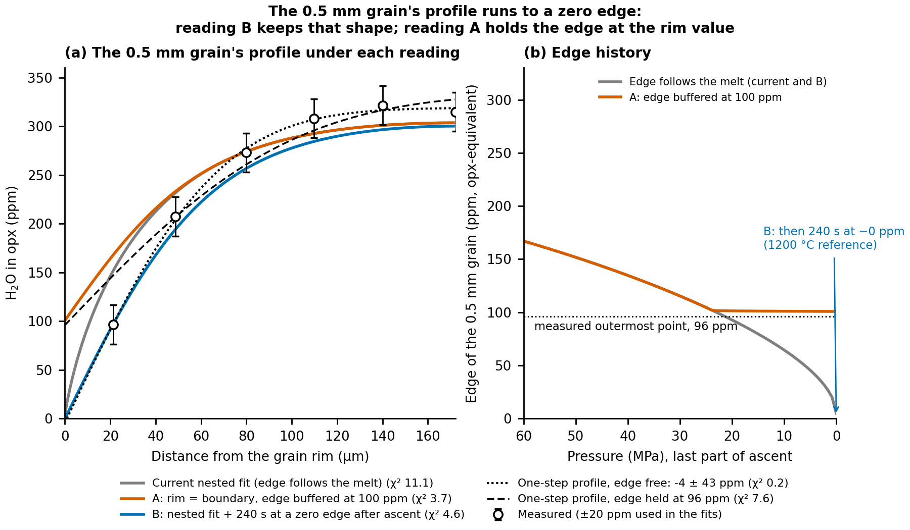
Neither cause is tested yet. Reading A needs a buffer that holds the boundary near 100 ppm: exchange with melt in the veins, or a lag in the network. Reading B needs the grain’s edge to sit near zero for a few minutes at magmatic temperature. That could be hot residence after fragmentation before the bomb quenched (applied consistently, this would also act on the Ol-2 olivine). It could also be a traverse orientation about 0.6 log units faster than the other grains (within published opx anisotropy, e.g. Carpenter 2003 [001] against [100]), or an oblique section that stretches the profile.
The Thomaidis (2022) minimum is the Arrhenius fit through the strongest lower limit at 600, 700 and 900 °C in his Table 6.5 (Ea 140 kJ/mol), extrapolated to 1200 °C: log D = −7.76, as the thesis text quotes (−7.8); the deposited figure drew it at −6.6. Thomaidis derived these limits from d = √(D_gb t), the time for the boundaries to deliver deuterium to an opx at distance d, and notes that they need no assumption about the boundary width (his p. 73). They are therefore the same kind of quantity as the fitted network D and are drawn as published on the network axis; the eq. 5 rescaling would move both by the same 1.22 log units, so the fit stays 2.2 log units above the minimum. On the grain-boundary axis the fit is −4.4 (68 %: −4.6 to −4.4), at Demouchy’s printed law (−4.61) and 0.9 log units above its tabulated value (−5.29), as the thesis text found (−4.8 to −4.3).
F.10 Figure 14: time for a cpx to equilibrate with the host
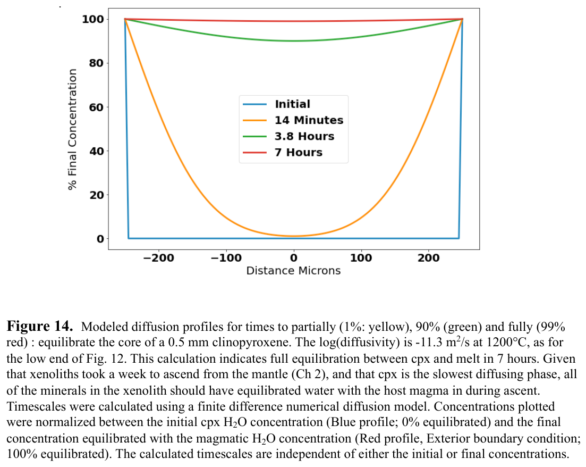
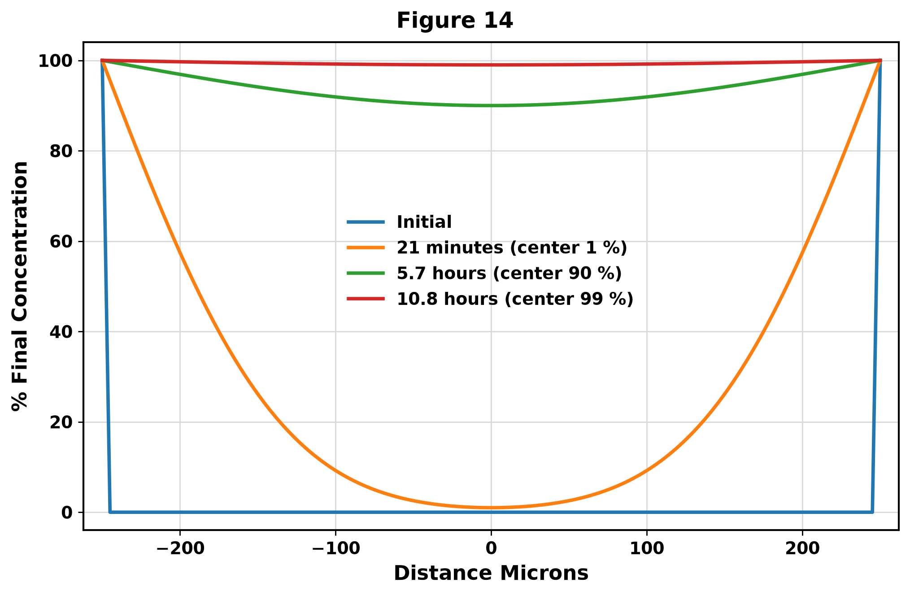
Figure 14 (Chapter 3). Left (a): as deposited (2023). Right (b): replica with the 2026 cpx diffusivity (joint fit, log10 D = −11.50 m²/s at 1200 °C), same 500 µm slab and analytic solution.
At the deposited diffusivity (log10 D = −11.3) the same calculation reproduces the deposited times (13 min and 6.8 h against 14 min and 7 h). With the slower 2026 cpx diffusivity the center reaches 1 % of the change in 21 min, 90 % in 5.7 h and 99 % in 10.8 h, about 1.6 times the deposited 7 h. Full equilibration still takes far less than the days of residence in the carrier (Chapter 9).
F.11 Figure 15: cpx cores against the host-magma water
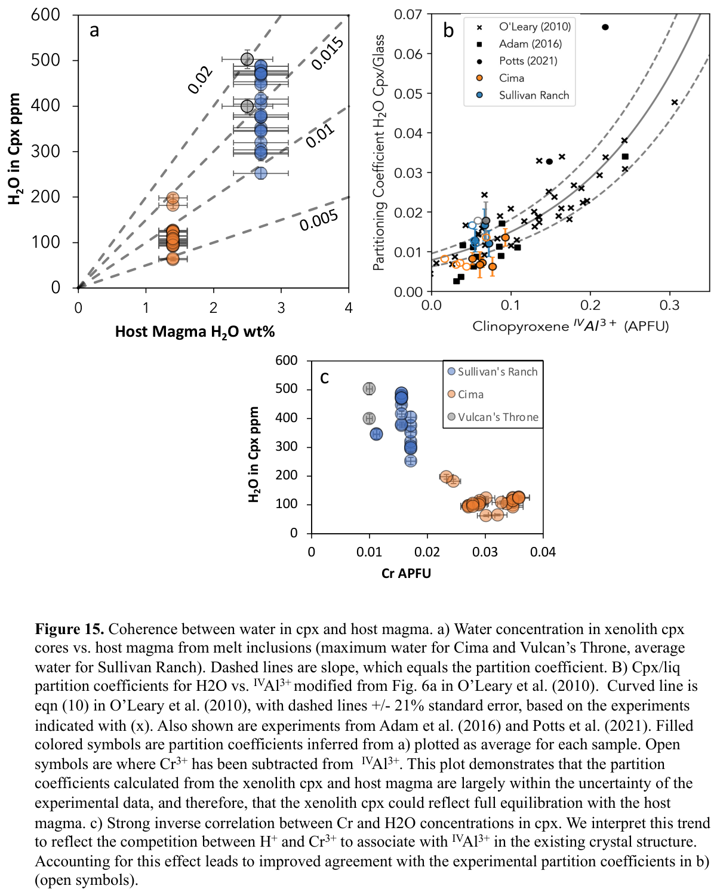
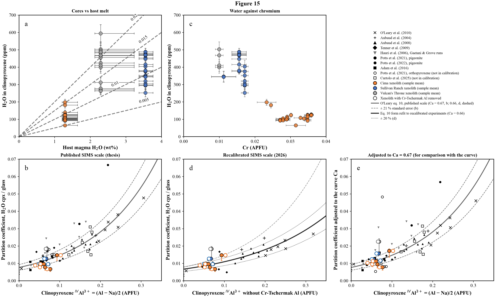
Figure 15 (Chapter 3). Left (a): as deposited (2023). Right (b): replica with the 2026 values: (a) cpx cores against the best melt H2O of each volcano (bars: best-estimate range) with lines of constant D; for Vulcan’s Throne and Cima the bar runs up to the soft maximum from literature H2O/Ce (upper value 265; Rasmussen 2017, Rowe 2015, Dixon 2017) times Ce: 3.23 wt% (Vulcan’s Throne, Ce 122 ppm in the olivine-corrected liquid) and 1.64 wt% (Cima, Ce proxy 62 ppm). The Sullivan Ranch inclusions support that range. Their H2O is close to undegassed: the deep CO2-rich vapor removes at most 0.2 wt%. Their H2O/Ce spans 149–416 (main group 149–331, median 215), which covers the literature range and extends above it, so 265 is not an extreme choice. One ratio times whole-rock Ce still does not predict Sullivan Ranch itself (265 × 85 ppm = 2.25 wt%, against 3.55), because there H2O varies with Cl, not Ce; (b) cpx/melt D against tetrahedral Al on the published scale, every study of the deposited panel (O’Leary 2010, Aubaud 2004 and 2008, Tenner 2009, Hauri 2006, Potts 2021 and 2022, Adam 2016; Curtolo 2025 open) with O’Leary eq. 10 at Ca = 0.67 (±21 %); (c) cpx core H2O against Cr (bars: total 1σ and the EMPA Cr standard deviation); (d) the 28 recalibrated experiments with the eq. 10 form refit to them (ln D = −4.19 + 4.92 IVAl − 1.24 Ca, ±20 %); (e) panel b with each D adjusted to the curve’s Ca, D × exp(−1.0 (0.67 − Ca)): adjusted values, for comparison with the curve.

Figure 15, 2026 form. Mean cpx cores against melt H2O, and observed against predicted cpx/melt D (Figure 9.3). Bars for Vulcan’s Throne and Cima run to the H2O/Ce soft maximum (see above).
The deposited host-melt H2O (2.6, 2.3 and 1.5 wt%) is superseded by 3.549, 2.29 and 1.29 wt%; Vulcan’s Throne’s 2.29 is the wettest of its three inclusions, and its soft maximum (3.23 wt%, from literature ratios) made the earlier bars asymmetric. The eq. 10 curves fix Ca (D depends on IVAl and Ca), so experiments at other Ca sit off the curve even where the equation fits them; no measured point is moved except in panel e. The Potts pigeonite runs were listed in two source tables and are plotted once. On a common SIMS scale (panel d) the xenolith cpx hold 1.2-2.6 times the water the recalibrated experiments predict; the deposited panel b compared recalibrated xenolith values with published experiments.
F.12 Figure 16: ascent timescales
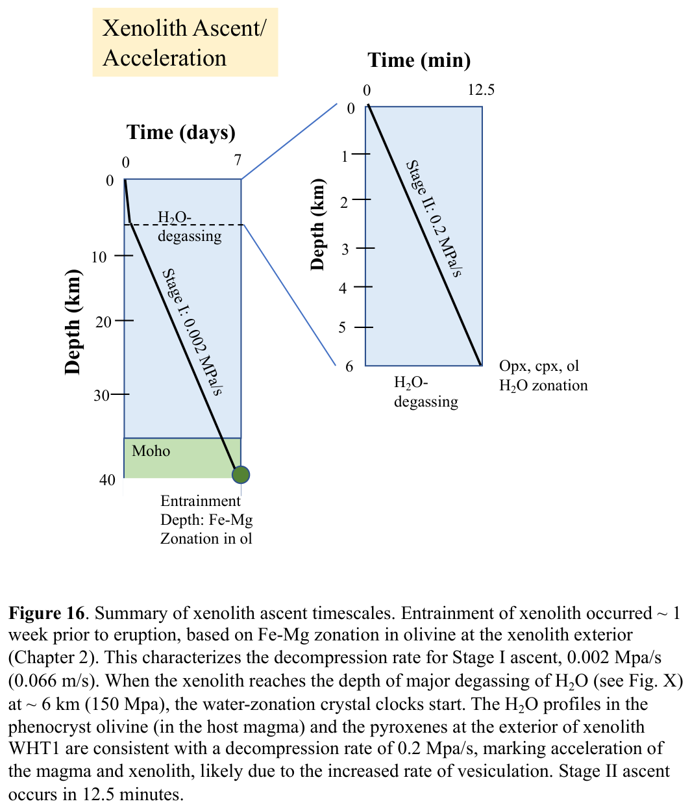

Figure 16 (Chapter 3). Left (a): as deposited (2023). Right (b): 2026 replacement: the Sullivan Ranch rate among published eruptions. Central row: MiMiC start on the P–T path, 0.093 (0.055–0.154) MPa/s; isothermal 0.143. The CO2/Nb start follows; the sensitivity rows below it were run on the CO2/Nb start. Each published rate was checked against its source (docs/literature/VERIFY_FIG12_FIG16_2026-10-30.md).
The deposited synthesis set the 2023 rate (about 0.2 MPa/s) against a week-long deep ascent. The 2026 comparison places the Sullivan Ranch rate among published diffusion-derived rates on each study’s own model temperature (Chapter 8).
Sources: figures/COMPARISON.md (point-by-point comparison of each recompiled figure), figures/reference_pages/ (pages of the deposited figure file), scripts/figures/ (recompiled figures), scripts/figures/report2026/.